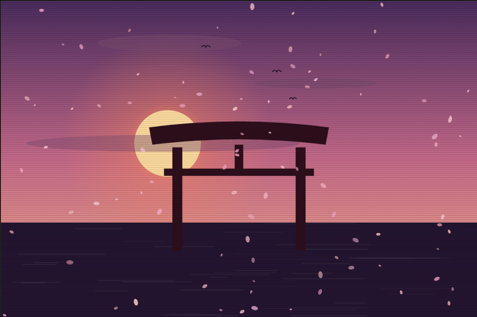
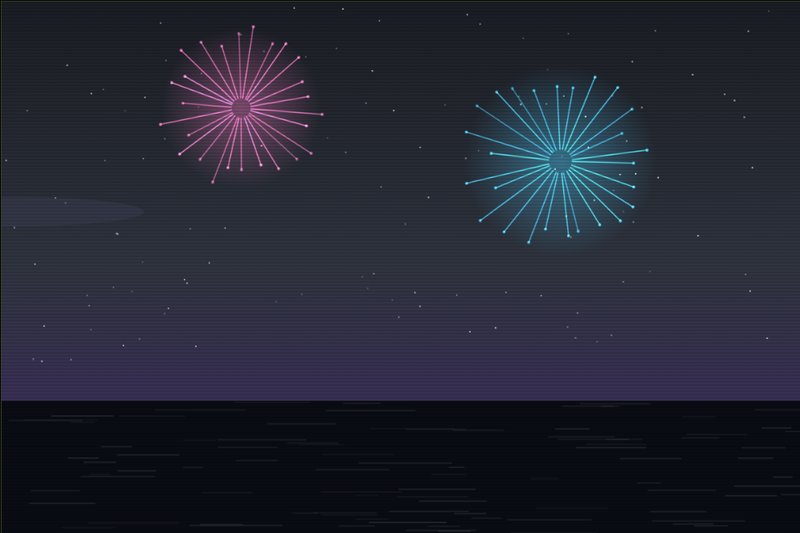

考える
quick_todo思考の入口
AIと作る、自分専用の道具たち
quick_todo · image_effector · mobile-ux-handy-editor
自分の「こうしたい」を、
触れる道具に変える話。
既存ツールの高機能さではなく、
自分の作業に残る小さな摩擦を消す。
入力が遅い
同じ作業が多い
触った感触を伝えにくい
開発の単位は「機能」ではなく、
一つの違和感でした。
「作る → 触る → 直す」が、仕様を育てる。
思いつきを逃さず、
あとから操作で整理する。
入力・移動・完了・調査を、
自分の手癖に合わせて設計。
Vimのルールを、Todoの文脈へ
加工だけではなく、
生成・動画化・共有まで一つに。
ブラウザ内 WebGL2 / AIシーン生成 / GIF・MP4出力
AIは完成品を返すだけでなく、
試行錯誤の速度を上げる。


見た目だけでなく、
触った感触まで共有する。
Figmaの前後にある「触る・直す・伝える」を一つに。
思考の入口
制作の実験場
仕様と実装の接点
個人開発の対象は、アプリではなく自分の作業環境。
同じ要件を渡して、
開発ループのどこで強いかを見る
| 比較軸 | 任せたいこと | 人が判断すること |
|---|---|---|
| 探索 | 既存コードの理解 | どこを触るか |
| 実装 | 複数ファイルの変更 | まず動く形 |
| 調整 | UI・操作感の修正 | 触って違うを直す |
| 検証 | テスト・ビルド | 壊さず届ける |
機能は増やせる。
でも、使いやすさは増えない。
AIは、
自分専用の道具を作る
設計パートナーになった。
考える · 作る · 試す